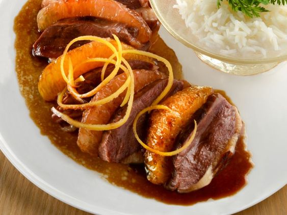

Magret de Canard à l’Orange

"Seared duck breast adorned with a vibrant orange sauce. Tender, golden-brown slices of duck complemented by a zesty, citrus-infused glaze, creating a harmonious blend of flavors and textures."
Ingredients:
For the duck breast:
- Duck breasts
- Salt and Pepper
- Olive oil or butter
For the orange sauce:
- Oranges(juice and zest)
- Chicken or duck stock
- Granulated sugar
- Red wine vineger or balsamic vineger
- Cornstarch(optional for thickening)
- Butter
Additional optional ingredients for seasoning or garnish:
- Fresh herbs like thyme or rosemary.
- Garlic.
- Shallots or onions.
Recipe:
- Score the duck breasts: Using a sharp knife, score the skin of the duck breasts in a crisscross pattern (avoid cutting into the meat). This helps the fat render while cooking.
- Season the duck breasts: Pat the duck breasts dry with paper towels. Season both sides generously with salt and pepper.
- Sear the duck breasts: Heat a skillet or frying pan over medium-high heat. Add a small amount of olive oil or butter to the pan. Once hot, place the duck breasts in the pan, skin side down. Cook for about 6-8 minutes or until the skin is crispy and golden brown. Flip and cook for an additional 3-4 minutes for medium-rare doneness or adjust cooking time according to your preference. Remove the duck breasts from the pan and let them rest for a few minutes before slicing.
- Make the orange sauce: In the same pan used to cook the duck, pour off any excess fat, leaving about a tablespoon in the pan. Place the pan back over medium heat. Add the orange juice, orange zest, chicken or duck stock, granulated sugar, and red wine vinegar to the pan. Stir well, scraping any browned bits from the bottom of the pan. Let the sauce simmer and reduce by half, about 5-7 minutes. Taste and adjust the sweetness or seasoning as needed. Optionally, whisk in butter to add richness to the sauce.
- Slice the duck breasts: Cut the duck breasts into thin slices.
- Serve: Plate the sliced duck breasts and drizzle the orange sauce over the top. Garnish with fresh herbs if desired. Serve immediately and enjoy your delicious duck breast with orange sauce!.